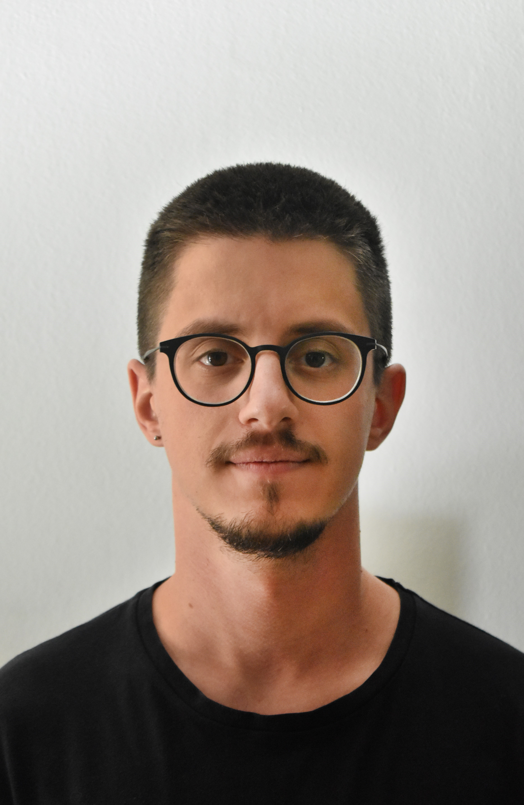

Alexandros Gerontas

Bio
Electrical Engineering graduate from Aristotle University of Thessaloniki with a flair for creativity. Adept at
translating complex concepts into practical solutions. Accomplished pianist with a keen
sense of harmony and discipline. Eager to apply my analytical skills and creativity to a dynamic work
environment.
Education
- Saint Paul School, Pylaia, Greece (Elementary through High School)
- Electrical Engineering & Computer Engineering, Aristotle University of Thessaloniki (2014-2023)
- Macedonian Conservatoire, Thessaloniki (2019 - current)
Work Experience
-
Video Game Translator @Steam Translation - Greek
2017-2018
Translated video game dialogues, sound effects, and item descriptions, from English to Greek.
-
Usher & Customer Service @Thessaloniki International Film Festival
2019-2022
Worked, as a volunteer, in several instances of the Thessaloniki International & Documentary Film
Festival, with responsibilities such as:
- Ticketing
- Ushering at venues
- General customer service
-
Video Editor @Macedonian Conservatoire
2020 - current
Filmed, recorded and edited arrangements of several classical and modern musical pieces. (Official Macedonian
Conservatoire Youtube Channel)
-
Pianist @Macedonian Conservatoire
2023 - current
Accompanying other musical instruments, in Chamber Music lessons.
Skills
- Software Programming (C, C++, Java, Python, MATLAB, HTML, CSS)
- Microsoft Office Suite (Word, Excel, PowerPoint)
- DaVinci Resolve
- Audacity
- Customer Service
- Teamwork
- Organizational Skills
Languages
- Greek (Native)
- English (Proficiency)
- Spanish (Basic)
Awards & Honors
- Golden Award for Piano at Panhellenic Music Competition "Filonas", Athens, 2008
- Excellence Award at Piano Degree Exams, Macedonian Conservatoire, 2023
Contact
e-mail: alexandros.ger.gr@gmail.com